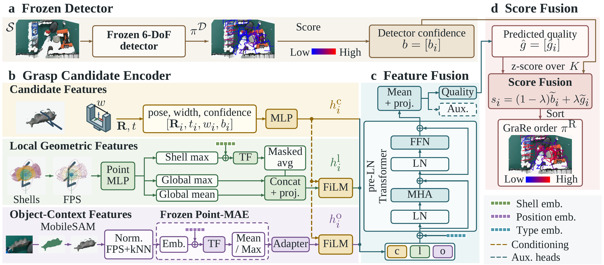
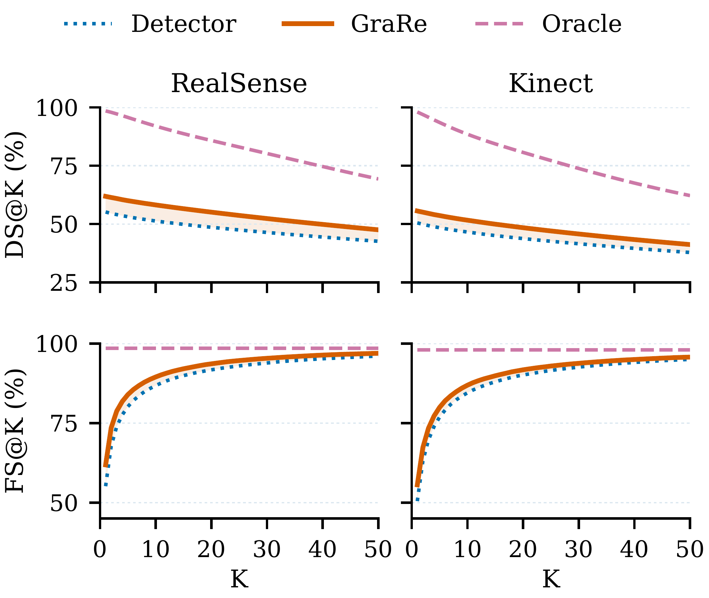
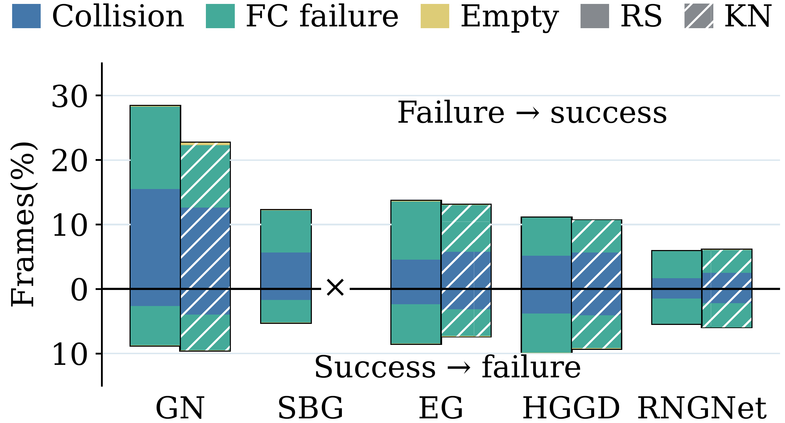
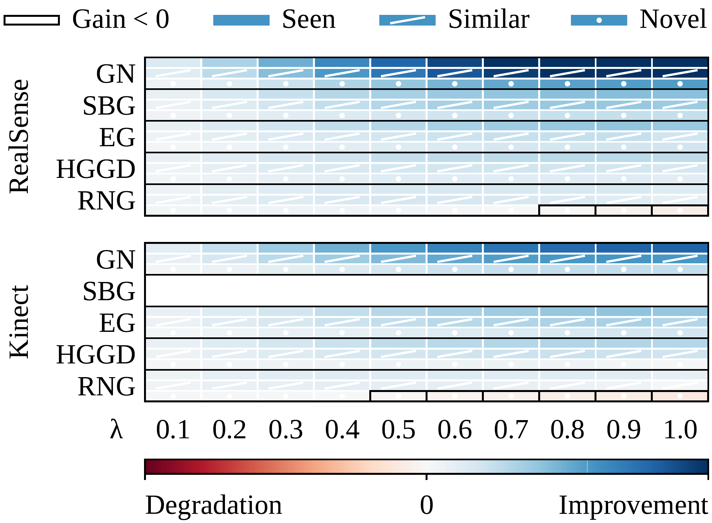
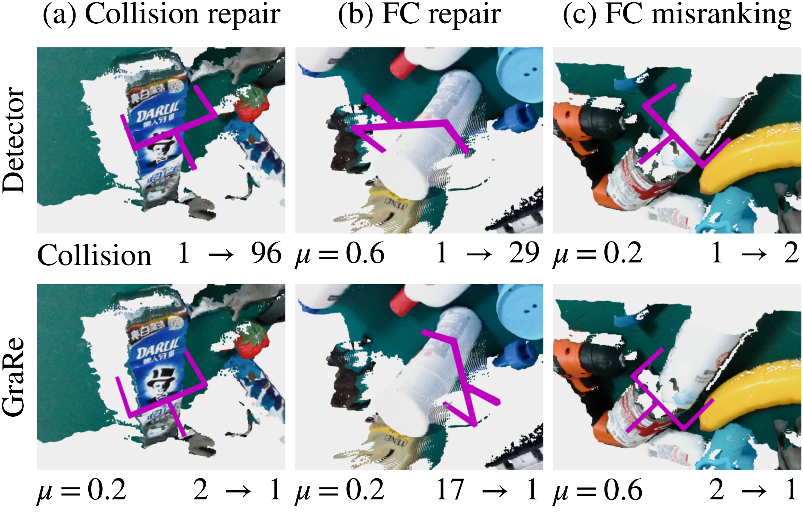
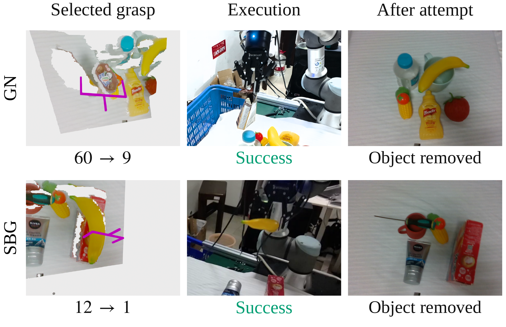
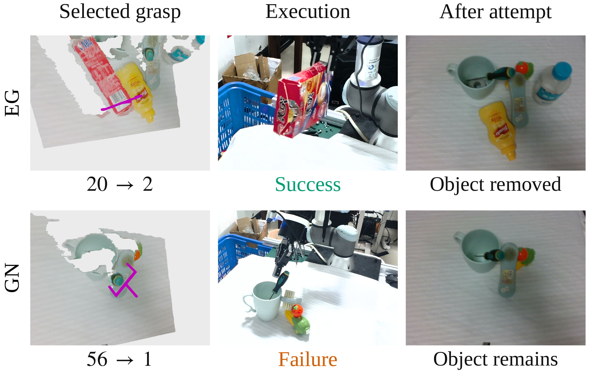

a
Candidate attributes
Pose, gripper width, and detector confidence guide the representation of each grasp.
6-DOF GRASPING · LEARNED CANDIDATE RANKING
1 College of Intelligence Science and Technology, National University of Defense Technology2 Department of Engineering and Information Technology, The University of Melbourne
* Corresponding author
Learn to rank existing grasp candidates while keeping the detector and grasp poses frozen.
GraRe combines candidate attributes, local geometry, and object context to bring successful grasps forward.
Detector confidence does not always reflect grasp quality. GraRe learns which existing candidates to try first, without changing their poses.
Existing 6-DoF grasp detectors typically rank grasp candidates by detector confidence. However, our analysis on GraspNet-1Billion shows that detector confidence is often poorly aligned with grasp quality, leaving successful grasp candidates at low ranks. Motivated by this observation, we study whether learned re-ranking can improve candidate ordering while keeping detector parameters and grasp candidates unchanged. We propose GraRe, which estimates grasp quality from candidate attributes, shell-stratified local geometry, and object context. Candidate attributes condition the local geometric and object-context representations, and a Transformer fuses all three feature types. The predicted quality is combined with detector confidence to produce the final ranking. Experiments on GraspNet-1Billion with five frozen detectors show consistent improvements, with gains of up to 13.56 points in Average AP. Real-robot experiments further demonstrate robust grasping in cluttered scenes. These results show that improving candidate ranking provides a practical way to enhance frozen 6-DoF grasp detectors.
Candidate attributes condition local geometry and object context. A Transformer brings these complementary representations together to estimate grasp quality.

Pose, gripper width, and detector confidence guide the representation of each grasp.
Geometry around the gripper captures nearby surfaces and possible finger contacts.
The visible object shape provides context beyond the immediate gripper neighborhood.
s = (1 − λ) · z(b) + λ · z(ĝ)
Evaluated using the official GraspNet-1Billion evaluation protocol.
| Detector | Seen | Similar | Novel | Average |
|---|---|---|---|---|
| GN | 47.83 / 64.36 | 42.79 / 58.44 | 16.94 / 25.45 | 35.86 / 49.42 |
| SBG | 62.27 / 68.47 | 56.92 / 62.55 | 23.79 / 27.24 | 47.66 / 52.75 |
| EG | 69.31 / 74.92 | 61.49 / 65.16 | 25.28 / 28.35 | 52.03 / 56.14 |
| HGGD | 63.37 / 67.58 | 52.28 / 55.37 | 23.83 / 25.66 | 46.49 / 49.53 |
| RNGNet | 75.32 / 77.67 | 66.95 / 69.64 | 32.03 / 32.63 | 58.10 / 59.98 |
| Detector | Seen | Similar | Novel | Average |
|---|---|---|---|---|
| GN | 41.98 / 54.06 | 37.57 / 46.38 | 12.24 / 15.97 | 30.60 / 38.80 |
| EG | 63.76 / 69.72 | 52.42 / 57.47 | 19.61 / 22.06 | 45.26 / 49.75 |
| HGGD | 60.43 / 64.95 | 46.74 / 50.03 | 19.23 / 19.85 | 42.13 / 44.94 |
| RNGNet | 73.50 / 75.34 | 59.20 / 60.86 | 26.44 / 26.58 | 53.05 / 54.26 |
Local geometry and auxiliary supervision consistently support better ranking; the value of object context varies by detector.
| Variant | GN | SBG | EG | HGGD | RNGNet |
|---|---|---|---|---|---|
| Detector | 35.86 / 30.60 | 47.66 / — | 52.03 / 45.26 | 46.49 / 42.13 | 58.10 / 53.05 |
| Full GraRe | 49.42 / 38.80 | 52.75 / — | 56.14 / 49.75 | 49.53 / 44.94 | 59.98 / 54.26 |
| w/o Candidate | 47.63 / 37.21 | 51.74 / — | 54.19 / 48.15 | 47.99 / 43.73 | 59.98 / 53.79 |
| w/o Local | 44.99 / 36.48 | 50.60 / — | 54.45 / 48.43 | 47.77 / 43.15 | 58.76 / 53.60 |
| w/o Object | 48.71 / 38.04 | 52.59 / — | 55.98 / 49.73 | 49.92 / 45.05 | 59.83 / 54.44 |
| w/o Shell-wise FPS | 48.27 / 38.12 | 52.64 / — | 55.96 / 49.71 | 47.90 / 43.33 | 58.69 / 53.66 |
| w/ Concat Fusion | 48.72 / 38.12 | 52.73 / — | 56.04 / 49.92 | 49.88 / 45.24 | 59.85 / 54.42 |
| w/o Aux. Losses | 48.92 / 38.50 | 52.27 / — | 55.70 / 49.40 | 49.47 / 44.55 | 59.77 / 54.10 |
GraRe brings successful candidates forward while preserving the detector’s candidate set.

Successful candidates move closer to the front. DS@K rewards successful grasps at earlier ranks; FS@K measures how often a successful grasp appears in the first K candidates.
Curves average across detectors for each camera. The oracle uses ground-truth quality to show the remaining ranking headroom.

Collision and force-closure failures account for 47.86% and 49.7% of failure-to-success changes, respectively. Improvements go beyond rejecting collisions.
Regressions remain: force-closure failures account for 63.19% of success-to-failure changes. Percentages describe the changed-outcome groups, not the overall success rate.

GN benefits most from learned quality; RNGNet benefits from combining it with the detector’s original confidence.
The paper uses λ = 1.0 for GN, 0.8 for SBG / EG / HGGD, and 0.5 for RNGNet across the available cameras.

The first example demotes a colliding grasp. In the second, GraRe promotes a collision-free GN candidate from rank 17 to rank 1, improving the required friction coefficient from 0.6 to 0.2.
The RNGNet example reverses a correct detector preference: a candidate requiring μ = 0.6 displaces one requiring μ = 0.2. Relative quality errors can therefore overturn a correct first choice.
A UR3 arm, a Robotiq 2F-85 gripper, and a RealSense D435 camera. Ten cluttered scene configurations, three detectors, and two ranking policies.
| Detector | Ranking | Successful grasps | Cleared scenes |
|---|---|---|---|
| GN | Detector | 73.4%58 / 79 | 10%1 / 10 |
| GN | GraRe | 88.9%72 / 81 | 100%10 / 10 |
| SBG | Detector | 70.4%57 / 81 | 30%3 / 10 |
| SBG | GraRe | 87.2%68 / 78 | 90%9 / 10 |
| EG | Detector | 68.2%60 / 88 | 70%7 / 10 |
| EG | GraRe | 91.0%71 / 78 | 100%10 / 10 |
A successful grasp removes at least one object. A cleared scene has no objects remaining.
Across 60 trials, GraRe raises grasp success for all three detectors and clears more cluttered scenes.
| GN | SBG | EG |
|---|---|---|
| 0.84 s | 0.52 s | 0.50 s |
Most of the added time is spent preparing local geometry.
GraRe improves ordering; performance remains bounded by the candidates the frozen detector can generate.
Promoted candidates can remove objects from clutter, while difficult contacts can still fail.


@article{yuan2026grare,
title = {GraRe: Grasp Candidate Re-Ranking for Frozen 6-DoF Grasp Detectors},
author = {Yuan, Jibao and Zhao, Yuhui and Lv, Yinzhen and Xu, Chao and Li, Shun and Deng, Chenxi and Chen, Shaofei},
journal = {arXiv preprint arXiv:2608.00946},
year = {2026},
url = {https://arxiv.org/abs/2608.00946}
}